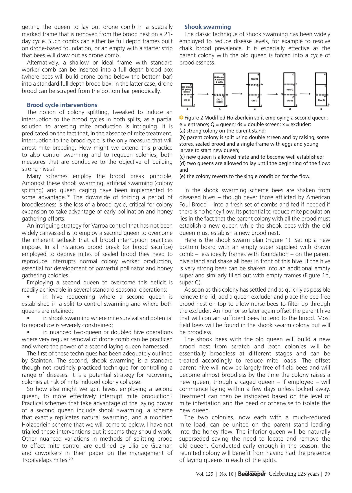

getting the queen to lay out drone comb in a specially
marked frame that is removed from the brood nest on a 21-
day cycle. Such combs can either be full depth frames built
on drone-based foundation, or an empty with a starter strip
that bees will draw out as drone comb.
Alternatively, a shallow or ideal frame with standard
worker comb can be inserted into a full depth brood box
(where bees will build drone comb below the bottom bar)
into a standard full depth brood box. In the latter case, drone
brood can be scraped from the bottom bar periodically.
Brood cycle interventions
The notion of colony splitting, tweaked to induce an
interruption to the brood cycles in both splits, as a partial
solution to arresting mite production is intriguing. It is
predicated on the fact that, in the absence of mite treatment,
interruption to the brood cycle is the only measure that will
arrest mite breeding. How might we extend this practice
to also control swarming and to requeen colonies, both
measures that are conducive to the objective of building
strong hives?
Many schemes employ the brood break principle.
Amongst these shook swarming, artificial swarming (colony
splitting) and queen caging have been implemented to
some advantage.28 The downside of forcing a period of
broodlessness is the loss of a brood cycle, critical for colony
expansion to take advantage of early pollination and honey
gathering efforts.
An intriguing strategy for Varroa control that has not been
widely canvassed is to employ a second queen to overcome
the inherent setback that all brood interruption practices
impose. In all instances brood break (or brood sacrifice)
employed to deprive mites of sealed brood they need to
reproduce interrupts normal colony worker production,
essential for development of powerful pollinator and honey
gathering colonies.
Employing a second queen to overcome this deficit is
readily achievable in several standard seasonal operations:
•
in hive requeening where a second queen is
established in a split to control swarming and where both
queens are retained;
•
in shook swarming where mite survival and potential
to reproduce is severely constrained;
•
in nuanced two-queen or doubled hive operations
where very regular removal of drone comb can be practiced
and where the power of a second laying queen harnessed.
The first of these techniques has been adequately outlined
by Stainton. The second, shook swarming is a standard
though not routinely practiced technique for controlling a
range of diseases. It is a potential strategy for recovering
colonies at risk of mite induced colony collapse.
So how else might we split hives, employing a second
queen, to more effectively interrupt mite production?
Practical schemes that take advantage of the laying power
of a second queen include shook swarming, a scheme
that exactly replicates natural swarming, and a modified
Holzberlein scheme that we will come to below. I have not
trialled these interventions but it seems they should work.
Other nuanced variations in methods of splitting brood
to effect mite control are outlined by Lilia de Guzman
and coworkers in their paper on the management of
Tropilaelaps mites.29
Shook swarming
The classic technique of shook swarming has been widely
employed to reduce disease levels, for example to resolve
chalk brood prevalence. It is especially effective as the
parent colony with the old queen is forced into a cycle of
broodlessness.
In the shook swarming scheme bees are shaken from
diseased hives – though never those afflicted by American
Foul Brood – into a fresh set of combs and fed if needed if
there is no honey flow. Its potential to reduce mite population
lies in the fact that the parent colony with all the brood must
establish a new queen while the shook bees with the old
queen must establish a new brood nest.
Here is the shook swarm plan (Figure 1). Set up a new
bottom board with an empty super supplied with drawn
comb – less ideally frames with foundation – on the parent
hive stand and shake all bees in front of this hive. If the hive
is very strong bees can be shaken into an additional empty
super and similarly filled out with empty frames (Figure 1b,
super C).
As soon as this colony has settled and as quickly as possible
remove the lid, add a queen excluder and place the bee-free
brood nest on top to allow nurse bees to filter up through
the excluder. An hour or so later again offset the parent hive
that will contain sufficient bees to tend to the brood. Most
field bees will be found in the shook swarm colony but will
be broodless.
The shook bees with the old queen will build a new
brood nest from scratch and both colonies will be
essentially broodless at different stages and can be
treated accordingly to reduce mite loads. The offset
parent hive will now be largely free of field bees and will
become almost broodless by the time the colony raises a
new queen, though a caged queen – if employed – will
commence laying within a few days unless locked away.
Treatment can then be instigated based on the level of
mite infestation and the need or otherwise to isolate the
new queen.
The two colonies, now each with a much-reduced
mite load, can be united on the parent stand leading
into the honey flow. The inferior queen will be naturally
superseded saving the need to locate and remove the
old queen. Conducted early enough in the season, the
reunited colony will benefit from having had the presence
of laying queens in each of the splits.
Figure 2 Modified Holzberlein split employing a second queen:
e = entrance; Q = queen; ds = double screen; x = excluder:
(a) strong colony on the parent stand;
(b) parent colony is split using double screen and by raising, some
stores, sealed brood and a single frame with eggs and young
larvae to start new queen;
(c) new queen is allowed mate and to become well established;
(d) two queens are allowed to lay until the beginning of the flow:
and
(e) the colony reverts to the single condition for the flow.
Vol. 125 | No. 10 |
Celebrating 125 years | 39